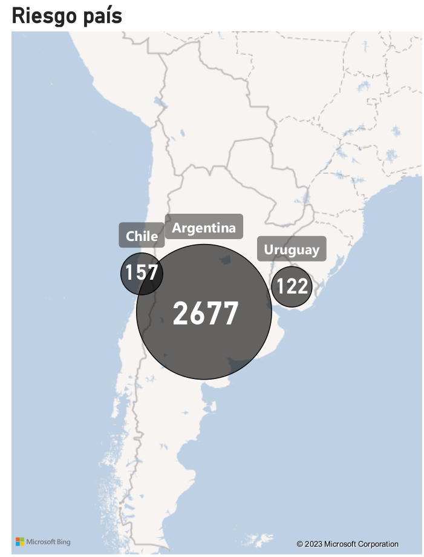
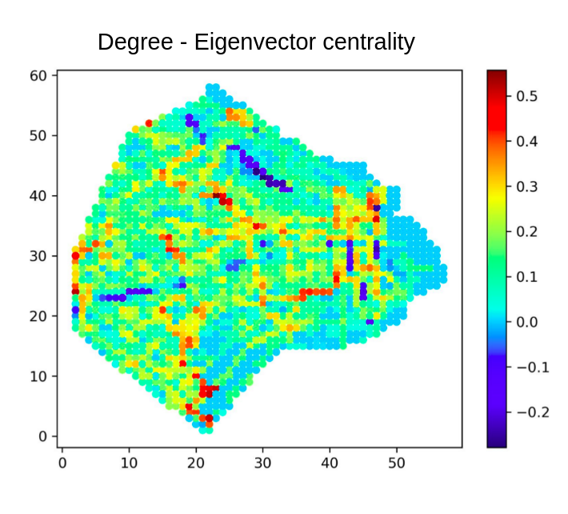
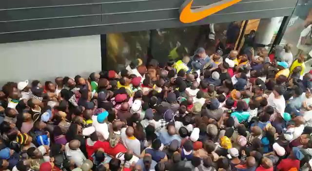

Data Scientist — The Adecco Group (Current)
Large-scale data systems with PySpark and cloud infrastructure, focused on ranking and optimization in the HR industry. Also building agentic AI systems for document processing with LLMs.
Data Scientist & AI — Decision Intelligence
Data Scientist with a background in Physics, focused on building AI systems that support real-world decision-making.
I'm a Data Scientist with a background in Physics, where I worked on computational modeling of complex systems. This experience shaped how I approach problems: combining analytical rigor with a focus on real-world behavior.
My work today sits at the intersection of machine learning and decision-making. I'm particularly interested in Decision Intelligence — how data and models can be used to support better decisions in practical, operational contexts.
I've worked on problems involving ranking systems, predictive modeling, optimization, and geospatial data across different industries. These projects often require going beyond model development, focusing instead on how systems are integrated, evaluated, and used in practice.
I also have extensive experience with Generative AI, including the design of RAG pipelines, agent-based systems, and document processing workflows built on unstructured data. Programming has been central to my work for over 10 years, primarily in Python.
I see data science as a decision-making discipline, not just a modeling exercise.
Most data science work stops at the model. My focus is on what happens after: how do model outputs translate into better decisions? How do you measure whether those decisions actually improved things?
This means I think about:
This perspective is what I refer to as Decision Intelligence: the discipline of using data and AI to improve how decisions are made, at scale.
Selected roles across data science, machine learning, and data-driven product development.
Large-scale data systems with PySpark and cloud infrastructure, focused on ranking and optimization in the HR industry. Also building agentic AI systems for document processing with LLMs.
Led cross-functional teams delivering ML solutions in healthcare, insurance, and sales. Worked on churn prediction, customer segmentation, and GenAI-based document processing.
Designed and led development of an embedding-based ranking system for e-commerce and a GenAI-powered assistant for pharmaceutical product recommendation.
Developed predictive models and geospatial data products for infrastructure monitoring and national security, including wildfire detection and anomaly detection systems.
Examples of applied machine learning systems and decision-oriented data products.
Problem: Predict customer cancellations with a 3-month horizon to enable proactive retention strategies.
Approach: ML model (XGBoost + Random Forest) trained on millions of records with demographic, behavioral, payment, and interaction features. Included temporal validation, class imbalance handling, and hyperparameter tuning.
From model to decision: High-risk customers were prioritized for retention support. A/B testing measured the impact of business actions, and a dashboard was built to monitor performance over time.
Impact: More targeted retention strategies, improved outcomes for high-risk users, and optimized resource allocation.

Problem: Understanding pedestrian dynamics for urban planning and crowd management.
Approach: Computer vision pipeline to detect and track individuals across video frames, extracting trajectories and behavioral patterns. The video analyzed depicts the moments leading up to the Meron festival crowd crush in 2021.
Key challenge: Handling occlusions and maintaining identity consistency in real-world scenarios. GitHub repository.

Problem: Economic and operational data is difficult to interpret without proper visualization.
Approach: Interactive Power BI dashboard exploring key economic indicators of Southern Cone countries (Argentina, Chile, Uruguay), enabling dynamic analysis and comparison.
Key challenge: Designing visualizations that support decision-making, not just reporting.

Geospatial analysis of the Buenos Aires bus network using centrality measures to identify the most and least connected areas of the city.
I write about data science, machine learning systems, and decision-making in real-world contexts — especially around applied AI and Decision Intelligence.
An exploration of a counterintuitive result from computational physics: how breaking containers into fragments can actually improve how efficiently space is used — with implications for optimization problems in logistics and operations.
More articles on Google Scholar.
Before transitioning fully into industry, I completed a PhD in Physics at the Universidad de Buenos Aires (UBA), specializing in computational modeling of complex systems.
My research focused on pedestrian dynamics and crowd behavior — combining physics-based models, numerical simulations, and optimization techniques. I have authored multiple publications in international journals, with over 200 citations.
My doctoral advisors were Claudio Dorso and Guillermo Frank. You can access my PhD thesis (in Spanish) and my full publication list on Google Scholar.

We explored panel-like obstacles in front of exit doors ("vestibules") and showed through simulation that this layout significantly increases evacuation flow. Published in Sticco et al. 2022 and Sticco et al. 2023. Watch the simulation.

Analyzed a real Black Friday crowd video and used a Genetic Algorithm to calibrate the Social Force Model parameters. Results closely replicated empirical behavior. Published in Sticco et al. 2021.
Feel free to reach out for collaborations or conversations around data, machine learning, and decision-making systems.